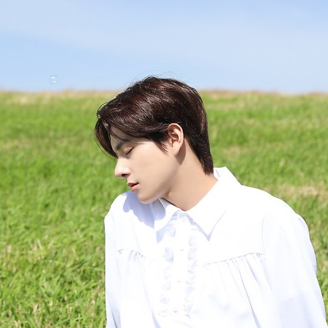

Jake's Profile
Home

Stage Name: Jake
Korean Name: Sim Jae Yun (심재윤)
English Name: Jake Sim
Age: 21
Birthday: November 15th, 2002
Position: Lead Vocalist
Height: 175 cm (5’9″)
Nationality: Korean-Australian
Representative Emoticon: 🐶
Small Facts About Him:
Jake has a dog named Layla
Jake has an older brother.
He was born in South Korea but raised in Australia since he was nine years old.
He played soccer for a while and his position was ‘striker’.
He played the violin 4 years and was part of his school’s orchestra.